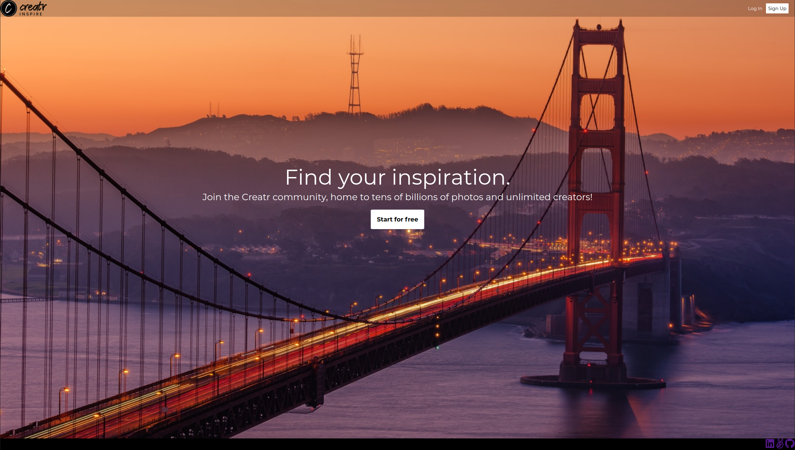
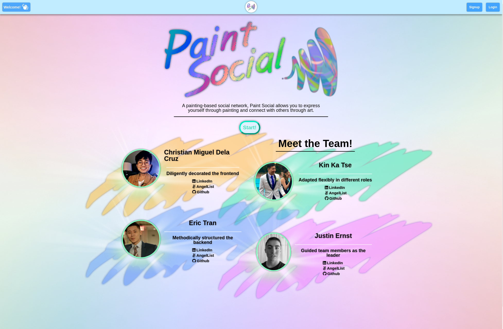
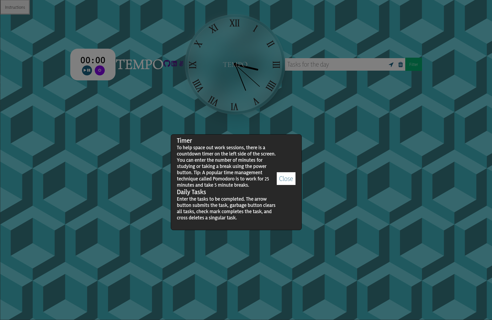

About me
Prior to becoming a software engineer, I studied Accounting and graduated from Baruch College with my bachelor's degree.
I realized that I no longer had the passion to continue pursuing a career in Accounting so I explored my options and the stock market peaked my interest so I transitioned into becoming a day trader.
After learning about algorithmic trading and the plethora of ways coding can increase the efficiency of a trader, I
decided to learn how to code.
In the process of exploring the world of coding and trying to learn it myself,
I was fascinated by the endless possibilities and the endless journey of learning, puzzle-solving, and creativity that
coding could offer. In web development, my favorite part is creating practical solutions to real-life problems and knowing that every line
of code has a valuable effect on the final outcome.
I decided to attend App Academy in 2021, and I haven't regretted it since.
Outside of coding, I spend my time trading, learning how to box, spending time with friends and family, and playing video games.
Skills
 JavaScript
JavaScript
 React
React
 Redux
Redux
 Node.js
Node.js
 Express
Express
 jQuery
jQuery
 HTML5
HTML5
 CSS
CSS
 Sass
Sass
 Ruby
Ruby
 Rails
Rails
 AWS S3
AWS S3
 PostgreSQL
PostgreSQL
 MongoDB
MongoDB
 Webpack
Webpack
 Git
Git
 GitHub
GitHub
 Heroku
Heroku
 Canvas
Canvas
Projects

Creatr is a clone of Flickr's image hosting service, built using
React/Redux for the frontend, Ruby on Rails for the backend API, and AWS S3 for cloud storage.
My favorite part about creating this application was that I have always been interested in photography and the power of
coding allowed me to create an application that catered to my interests. As it is my own application, I was able to
customize it how I wanted it to be created and add any customizations I wanted to it.

An art-based social network platform built with MERN Stack and Canvas API, Paint Social offers painting-based social
networking.
Paint Social allows you to express yourself through painting and connect with others
through art. It was developed so users could share their creative works and show off their creativity.
Users can use this application to draw on a blank canvas, a place where creativity can flow, and just be free to explore.

Tempo is a vanilla javascript application built using only Javascript, SCSS, and HTML. No additional libraries or frameworks were used.
Tempo is also designed to look like a watch and helps you keep track of time and helps become more productive. An
organized and visualized day's work aids the user psychologically, as well as providing a sense of accomplishment as you
knock off each task one by one.